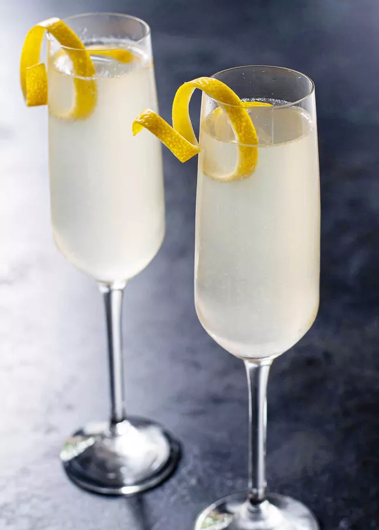

French 75

Recipe
A recipe for my favorite cocktail, the French 75. This recipe is from Jim Meehan's book, Meehan's Bartender Manual.
Ingredients
- 1 ounce Tanqueray gin
- 1 ounce champagne (or other sparkling wine)
- 0.5 ounce freshly squeezed lemon juice
- 0.5 ounce simple syrup (1:1)
- Lemon twist, to garnish
Preparation
- Combine gin, lemon juice, and simple syrup in a cocktail shaker with ice and shake.
- Strain into a flute or coupe glass.
- Top with champagne and garnish with a lemon twist.
Back to Home